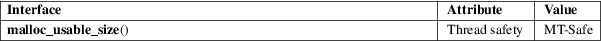

malloc_usable_size − obtain size of block of memory allocated from heap
Standard C library (libc, −lc)
#include <malloc.h>
size_t malloc_usable_size(void *ptr);
The malloc_usable_size() function returns the number of usable bytes in the block pointed to by ptr, a pointer to a block of memory allocated by malloc(3) or a related function.
malloc_usable_size() returns the number of usable bytes in the block of allocated memory pointed to by ptr. If ptr is NULL, 0 is returned.
For an explanation of the terms used in this section, see attributes(7).

GNU.
The value returned by malloc_usable_size() may be greater than the requested size of the allocation because of alignment and minimum size constraints. Although the excess bytes can be overwritten by the application without ill effects, this is not good programming practice: the number of excess bytes in an allocation depends on the underlying implementation.
The main use of this function is for debugging and introspection.
malloc(3)